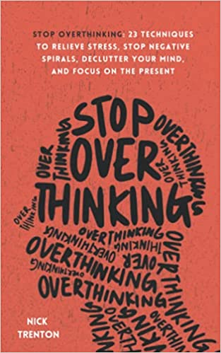
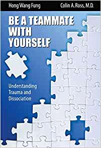

These are the books we have on our bookshelf and we thought we’d share our opinions. 4-5 stars means we recommend for DID systems.
| Image/Link | Our Rating | Review | Image/Link | Our Rating | Review |
|---|---|---|---|---|---|
 |
4 Stars | Reading this book helped us evaluate our dating choices and make a change. We still use the mantra ‘you can only control your thoughts, your actions, and your reactions’ on a daily basis. |  | TBD | We have problems with this on a daily basis, very excited to learn some tips/tricks. Will update when book has been read. |
| 4.5 Stars | Fantastic breakdown of understanding manipulation. |
 |
TBD | Will update when we’ve read it | |
| 1 Star because of Trigger However, sister loves this book |
Boundaries are extremely important, and there may be good information in this book. However, it is very religion oriented and may be extremely triggering.
TW: Religion. |
4.5 Stars | Triggered sections implied by chapter titles. Great insight into how your home environment may not have been healthy. Be warned, you may not realize that you had toxic parents, but this will leave no doubt. Recommend therapy appointment after completion. | ||
| 3.5 Stars | Nice story about a program to help DID systems. More clinical than advice. | 4.5 Stars | Great overview for understanding DID. | ||
| 1 Star | This book has decent information, but dives into graphic detail about CSA. Honestly, we should have put it down at the first trigger and will never pick it up again.
TW: CSA graphic |
 | 4 Stars | Good therapy resource. Good to be used to ground your expectations of your therapeutic journey. | |
| 4 Stars | Good reference for expectations of therapy. Recommend reading to ensure you and your therapist are on the same page. | 4 Stars | Great reference when you are trying to work through life. | ||
| 5 Stars A MUST HAVE! |
Short, sweet, and to the point. Great for beginners and great reference when your system feels scattered. |
 |
5 Stars A MUST HAVE! |
We are only about 2/3s of the way through this book, using it as a therapy supplement. This is a really good workbook, it’s expensive but worth it. This is a really good resource for navigating healing and managing your system. | |
| 3 Stars | Good information, but a lot of grammatical errors made it hard to read. |